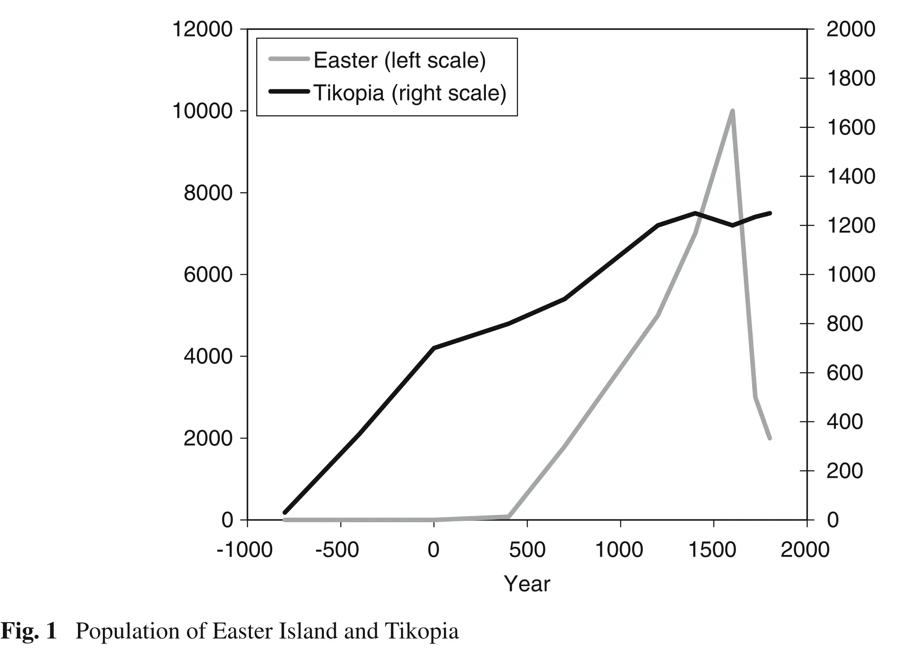

3 de la Croix and Dottori (2008)
This section discusses Croix and Dottori (2008), using a simplified model to illustrate the key points.
3.1 Introduction
This paper analyses the very distinct population patterns of two remote islands in the Pacific Ocean: Eastern Island and Tikopia. While Tikopians managed to control population growth and natural resources usage, the inhabitants of Eastern Island engaged in clan competition for the control of resources, leading to overpopulation and overexplotation of resources.
A key aspect of this paper is the especial role of fertility. Most papers assume that parents derive some utility from having children. However, in de la Croix and Dottori, fertility is the result of a Nash bargaining process for the control of resources. In particular, a larger population, facilitated by having more children, raises the value of the fallback option during the negotiation process. Consequently, individuals optimally decide to have more children, because this implies a better bargaining position. In this sense, equilibrium-level fertility rates result from the complementarities between different groups’ fertility decisions. However, the externalities of a higher fertiltiy rate are not internalised and, in the long run, population explodes, leading to a natural catastrophe.
3.1.1 Historical data
Based on data from archaeological studies, it has been estimated that the population of Eastern Island increased very little between 400CE (100 people by that time) and 110CE, and from then on, it exploded, reaching 10000 people during 1400-1600CE. The effects of the population race could be perceived by 1600CE: food consumption declined and population plummeted during the 17th century. By 1772, when Europeans arrived at Eastern Island, the total population was around 3000 people. In parallel, data about forests in Eastern Island indicate that upon the arrival of the first settlers during 400CE, tree-cutting begun. By 1400CE, deforestation had reached its peak and when the Europeans arrived, there were basically no trees in the island.

Meanwhile, Tikopia was settled around 900BCE and people lived by slash and burn agriculture. By 100BCE, due to decreasing returns from natural resources, pig breeding began, lasting until the 17th century, when Tikopians abandoned it because pigs required too many resources. Total population stabilized at around 1200 people and was kept at that level by purposeful mechanisms: celibacy, abortion, infanticide, sea exploration by young males, etc.
3.2 The model
De la Croix and Dottori work using the OLG framework. In the paper, agents live for two periods. However, important decisions are taken at the clan level, which acts as a representative agent. Clans (and individuals) are rational, have perfect foresight and take the actions of the other clans as given. The timing is as follows:
- Each clan chooses its fertility level,
- A Nash-Cournot fertility equilibrium level arises,
- Crops are cultivated and shared between clans following a non-cooperative bargaining process.
For simplicity, the island is populated by two opposed clans, all individuals belong to one clan only and they cannot change clan.
3.2.1 Preferences
Clan \(i\) at time \(t\) consists of \(N_{i,t}\) adults. Adults work, support their parents and have children. Old agents only consume what their children provide for them.1 Total utility is given by: \[ U_{i,t} = c_{i,t} + \beta d_{i,t+1}, \]
where \(c_{i,t}, d_{i,t+1}\) represents consumption when adult and old, respectively.
3.2.2 Budget
The income of an adult agent is \(y_{i,t}\). Each adult has to support his parents by giving them some resources. However, support for parents is not linear, but rather it depends on the number of siblings. In particular, each sibling contributes the following share of his income: \[ \frac{\tau}{1+n_{i,t-1}}, \]
where \(\tau \in (0,1)\). Clearly, the contribution decreases with the number of siblings.
Consequently, an agent in his old age who had \(n_{i,t}\) children receives, as total old age support,
\[ d_{i,t+1} = n_{i,t}\frac{\tau}{1+n_{i,t}}y_{i,t+1}. \]
Lastly, since total income is distributed between consumption and supporting parents \(\left(y_{i,t} = c_{i,t} + \frac{\tau}{1+n_{i,t-1}} y_{i,t}\right)\), consumption when young is just:
\[ c_{i,t} = \left( 1 - \frac{\tau}{1+n_{i,t-1}}\right)y_{i,t}. \]
3.2.3 Population
The population of each clan evolves according to the chosen fertility level: \[ N_{i,t+1} = N_{i,t}n_{i,t}. \]
3.2.4 Production
Production depends only on land. The amount of land is fixed at \(L\), and total factor productivity depends on the available natural resources \(R_t\). \[ Y_{i,t} = A(R_t)L. \]
The dynamics of resources follow the paper by Matsumoto (2002): \[ R_{t+1} = \left(1 +\delta - \delta \frac{R_t}{K} - b (N_{1,t} + N_{2,t})\right)R_t, \]
where \(K > 0\) is the carrying capacity (maximum possible number of resources), \(\delta > 0\) is the growth rate of resources while \(b>0\) measures the effect of population on resources.
3.2.4.1 Crop-sharing
We denote by \(\theta_t\) the share of crops \(Y_t\) that Group 1 appropriates. Therefore, each adult in Groups 1 and 2 obtains: \[ y_{1,t} = \theta_t \frac{Y_t}{N_{1,t}}, \] \[ y_{2,t} = (1-\theta_t) \frac{Y_t}{N_{2,t}}. \]
There are no property rights on the island, and groups have to bargain to decide how to split the total porduction \(Y_{t}\). This bargaining process is non-cooperative and, if no agreement is reached, clans will battle to appropriate the entire production.
3.3 Bargaining
Bargaining takes place under Nash-bargaining, and the outcome of the process solves:
\[ (U_{1,t}- \bar{U}_{1,t})^\gamma(U_{2,t} - \bar{U}_{2,t})^{1-\gamma}, \]
where \(U_{1,t}\) is what Group 1 shall receive and \(\bar{U}_{1,t}\) is the fall-back option of Group 1, this is, what Group 1 receives is there is no agreement. When there is no agreement between Group 1 and Group 2, the clans fight and the winner takes all. The probability that Group 1 wins the war, denoted by \(\pi_t\), depends on its size.
\[ \pi_t = \frac{N_{1,t}}{N_{1,t} + N_{2,t}}. \]
So, the more adults in one group, the more likely it is to win the war. From the equation, it is clear that clans have an incentive to increase their population: it helps win the war (if it happens) and provides them with a better bargaining position by raising \(\bar{U}_{i,t}.\)
Suppose than clans reach an agreement \(\theta_t\) on how to share crops: \(\theta_t\) goes to Group 1, and the remining \(1-\theta_{t}\) goes to Group 2. Then, the indirect utility of an individual is given by:
\[ U_{1,t} = \left(1-\frac{\tau}{1+n_{1,t-1}}\right)\frac{\theta_t Y_t}{N_{1,t}}+\beta\frac{n_{1,t}\tau}{1+n_{1,t}}\frac{\theta_{t+1} Y_{t+1}}{N_{1,t+1}}, \] \[ U_{2,t} = \left(1-\frac{\tau}{1+n_{2,t-1}}\right)\frac{(1-\theta_t) Y_t}{N_{2,t}}+\beta\frac{n_{2,t}\tau}{1+n_{2,t}}\frac{(1-\theta_{t+1}) Y_{t+1}}{N_{2,t+1}}. \]
If, instead, there is no agreement, clans fight, and the winner takes the entire production. Since \(\pi_t\) denotes the probability that Group 1 wins the fight, the fall-back utilities are given by:
\[ \bar{U}_{1,t} = \pi_t\left(1-\frac{\tau}{1+n_{1,t-1}}\right)\frac{ Y_t}{N_{1,t}}+\beta\frac{n_{1,t}\tau}{1+n_{1,t}}\frac{\theta_{t+1} Y_{t+1}}{N_{1,t+1}}, \] \[ \bar{U}_{2,t} = (1-\pi_t)\left(1-\frac{\tau}{1+n_{2,t-1}}\right)\frac{ Y_t}{N_{2,t}}+\beta\frac{n_{2,t}\tau}{1+n_{2,t}}\frac{(1-\theta_{t+1}) Y_{t+1}}{N_{2,t+1}}. \]
The difference between \(U_{i,t}\) and \(\bar{U}_{i,t}\) is:
\[ U_{1,t} - \bar{U}_{1,t} = \left(1 - \frac{\tau}{1+n_{1,t-1}}\right)(\theta_t - \pi_t)\frac{Y_t}{N_{1,t}}, \] \[ U_{2,t} - \bar{U}_{2,t} = \left(1 - \frac{\tau}{1+n_{2,t-1}}\right)(1 - \theta_t - (1-\pi_t))\frac{Y_t}{N_{2,t}}. \]
Since, at the time of bargaining, \(\left(1-\frac{\tau}{1+n_{i,t}}\right)\frac{Y_t}{N_{i,t}}\) has already been determined, we can abstract from it in the maximisation.
After substituting, \(\theta_t\), is the optimal sharing rule which solves
\[ \theta_t = \arg \max \left(\theta_t - \pi_t\right)^\gamma \left(1 - \theta_t - (1-\pi_t)\right)^{1-\gamma}. \] The optimal level \(\theta_t\) is then: \[ \theta_t = \frac{N_{1,t}}{N_{1,t} + N_{2,t}}. \]
3.4 Fertility
Finally, we can compute the optimal fertility levels for each group by maximising utility. So, Group 1 and Group 2 maximise:
\[ \begin{aligned} \max_{n_{1,t}} \overbrace{\left(1-\frac{\tau}{1+n_{1,t-1}}\right)\frac{\theta_t Y_t}{N_{1,t}}}^{constant\, at\, t} + \\ +\frac{\beta \tau n_{1,t}}{1+n_{1,t}}\left[\frac{\overbrace{N_{1,t}n_{1,t}}^{N_{1,t+1}}}{\underbrace{N_{1,t}n_{1,t}}_{N_{1,t+1}} + \underbrace{N_{2,t}n_{2,t}}_{N_{2,t+1}}}\right]\frac{A(R_{t+1})}{\underbrace{N_{t,1}n_{t,1}}_{N_{1,t+1}}}. \end{aligned} \]
\[ \begin{aligned} \max_{n_{2,t}} \overbrace{\left(1-\frac{\tau}{1+n_{2,t-1}}\right)\frac{\theta_t Y_t}{N_{2,t}}}^{constant\, at\, t} + \\ +\frac{\beta \tau n_{2,t}}{1+n_{2,t}}\left[1 - \frac{\overbrace{N_{2,t}n_{2,t}}^{N_{2,t+1}}}{\underbrace{N_{2,t}n_{2,t}}_{N_{2,t+1}} + \underbrace{N_{2,t}n_{2,t}}_{N_{2,t+1}}}\right]\frac{A(R_{t+1})}{\underbrace{N_{t,2}n_{t,2}}_{N_{2,t+1}}}. \end{aligned} \]
The optimum levels of fertility satisfy:
\[ n^\star_{1,t} = \left(\frac{N_{2,t}}{N_{1,t}}\right)^\frac{1}{3}, \] \[ n^\star_{2,t} = \left(\frac{N_{1,t}}{N_{2,t}}\right)^\frac{1}{3}, \]
So, the best course of action for Group 1 is to increase its fertility as Group 2 becomes more populous, and a race for population occurs. Of course, this has implications for the environment, because larger populations are destructive: \[ R_{t+1} = \left(1 +\delta - \delta \frac{R_t}{K} - b (N_{1,t} + N_{2,t})\right)R_t, \]
3.5 Steady state level of population and natural resources
Lastly, we can compute the steady state level of population using the two dynamical equations:
\[ n^\star_{1,t} = \left(\frac{N_{2,t}}{N_{1,t}}\right)^\frac{1}{3} \implies N_{1,t+1} = N_{1,t}\left(\frac{N_{2,t}}{N_{1,t}}\right)^\frac{1}{3} \] \[ n^\star_{2,t} = \left(\frac{N_{1,t}}{N_{2,t}}\right)^\frac{1}{3} \implies N_{2,t+1} = N_{2,t}\left(\frac{N_{1,t}}{N_{2,t}}\right)^\frac{1}{3}, \]
It is simpler to solve the corresponding linearised system, which we can obtain by taking logarithms: \[ \tilde{N}_{i,t+1} = \frac{2}{3}\tilde{N}_{i,t} + \frac{1}{3} \tilde{N}_{j,t}, \] where \(\tilde{N} = \log N.\)
We can obtain the dynamics of the logarithmic system:
\[ \tilde{N}_{i,t} = \frac{\tilde{N}_{i,0} + \tilde{N}_{j,0}}{2} + \frac{1}{2} 3^{-t}\left( \tilde{N}_{i,0} - \tilde{N}_{j,0} \right). \] The steady state level of population, for each group is \[ \bar{N}_i = \bar{N}_j = \sqrt{N_{1,0}}\sqrt{N_{2,0}}, \]
and the corresponding level of natural resources at the steady state is
\[ \bar{R} = K\left( 1 - \frac{\ b(\bar{N}_i + \bar{N}_j)}{\delta} \right). \]
3.5.1 Simulated trajectory
Lastly, we can compute the trajectory of the system for a set of parameters to visualize the evolution of the main variables. For instance, if we take the following parametrisation \(N_{1,0} = 9, N_{2,0} = 20, \delta = 0.08, K = 400, b = 0.0012, R_0 = 300\)
In a sense, in this model individuals save by having children.↩︎